首页 > 编程笔记
VS Code运行C和C++程序
Sublime Text 和 Visual Studio Code（后续简称 VS Code）作为当下最热门的 2 款代码编辑器，《Sublime Text运行C和C++程序》一节给大家讲解了“如何配置 Sublime Text，使其可以直接运行 C 和 C++ 程序”，本节继续讲解如何使用 VS Code 运行 C 和 C++ 程序。
值得一提的是，和 Sublime Text 一样，VS Code 也支持跨平台，包括 Windows、Mac OS X 以及 Linux。但和前者不同的是，无论读者在哪一平台上使用 VS Code，令其具备运行 C 和 C++ 程序能力的配置方法是一致的。
本节将以配置 Windows 平台上 VS Code 为例，为大家讲解如何在 VS Code 上直接运行 C 和 C++ 程序。
注意，安装好的 GCC 编译器必须同时支持 gcc 和 g++ 指令。读者可在命令行窗口中分别运行 gcc -v 和 g++ -v 指令，判断当前系统中是否已配置好了所需的编译环境（如图 1 所示）。
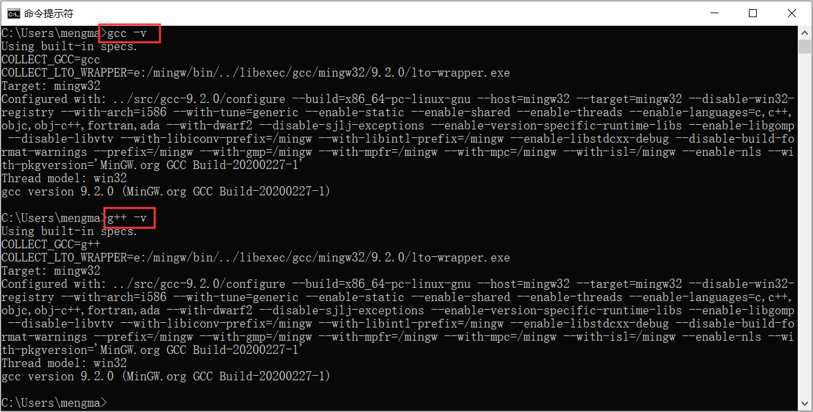
图 1 验证是否已配置好所需的编译环境
如图 1 所示，如果执行指令后，输出结果为相应编译器的有关信息，则表明编译器环境以配置成功；反之，如果提示我们“指令无效”，则表明编译环境尚未配置好。
在此基础上，对于英文基础薄弱的读者，可以通过为 VS Code 安装一个 Chinese 插件，使其变为中文版的 VS Code。安装过程如图 2 所示：
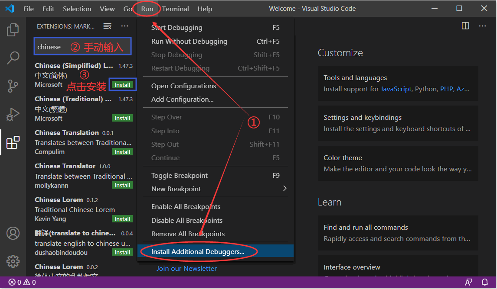
图 2 VS Code 中文化
如图所示，依次选择 "Run->Install Additional Debuggers..."，通过手动输入“chinese”（或“Chinese”），点击“Install”安装第一个，重启 VS Code 即可。
2) 事实上，使 VS Code 编辑器具备执行 C 和 C++ 代码能力的配置方法很简单，只需要为其安装 2 个扩展插件即可，分别为 C/C++扩展插件和 Code Runner 插件。打开 VS Code，其初始界面如图 2 所示：
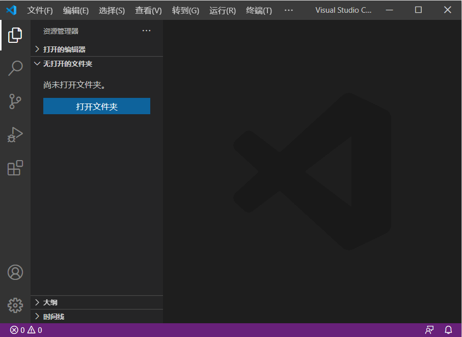
图 3 VS Code 的初始界面
3) 菜单栏中依次选择"运行 -> 安装附加调试器"，会弹出左侧对话框，选择“C/C++”扩展组件并点击“Install”进行安装。整个过程如图 4 所示：
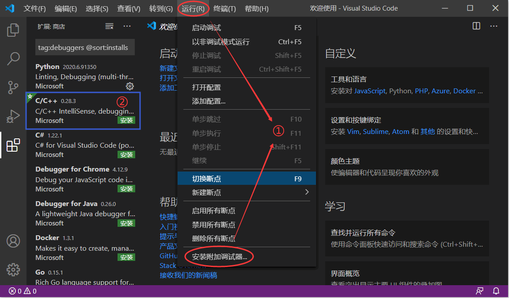
图 4 VS Code 安装“C/C++”插件
4) 同样，依次选择“运行 -> 安装附加调试器”，在左侧对话框中输入“Code Runner”后按
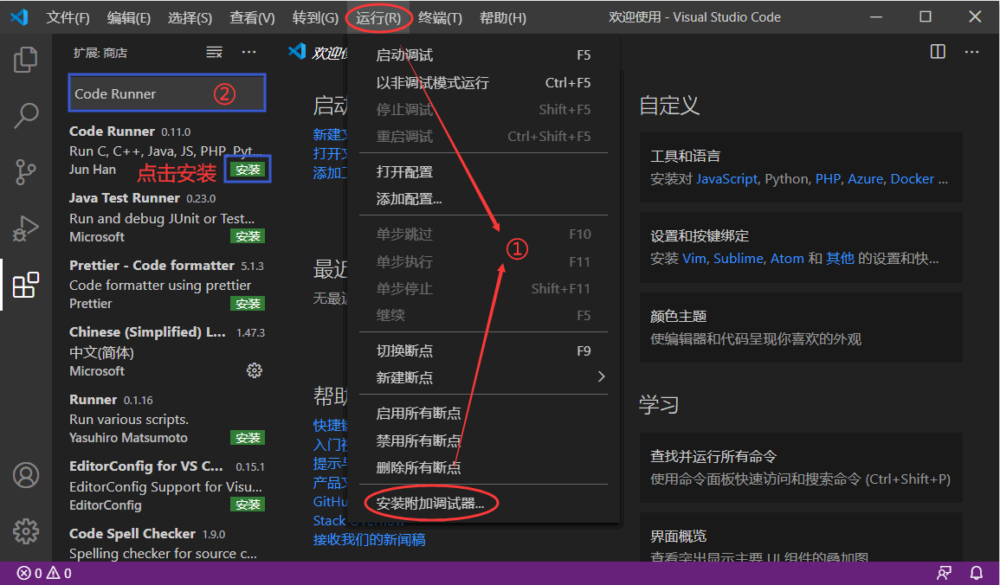
图 5 VS Code 安装 Code Runner 插件
注意，在已安装 Code Runner 插件的基础上，需要重启 VS Code 后，按图 6 所示，确定该插件是否安装有“Run In Terminal”扩展：
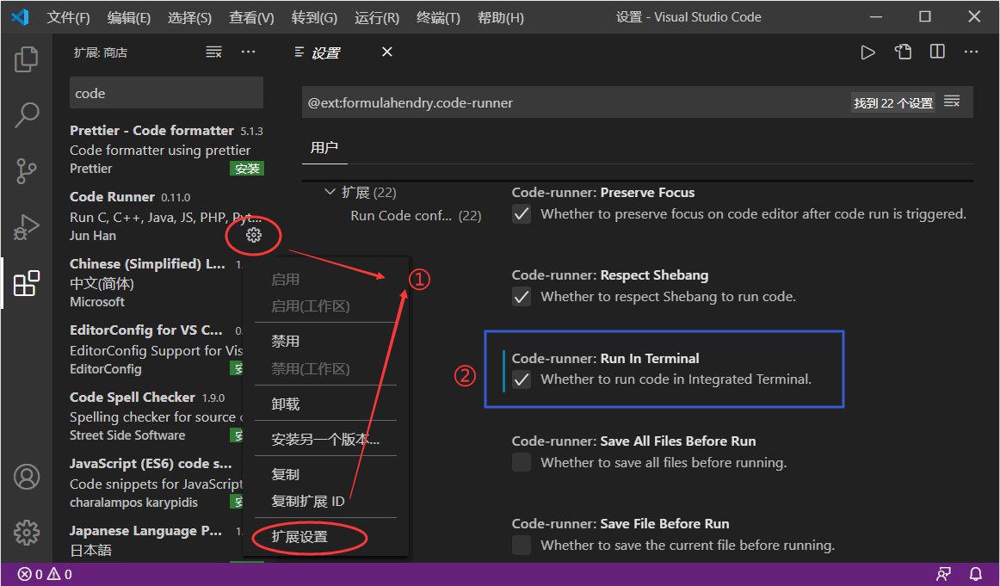
图 6 确定 Code Runner 插件是否安装有 Run In Terminal 扩展
由此，VS Code 就可以执行 C 或者 C++ 程序了。
依次在菜单栏中选择“文件 -> 新建文件”，这里以 C 语言程序为例，如下为在 VS Code 中编写的一段 C 语言程序，并将其保存为 demo.c：
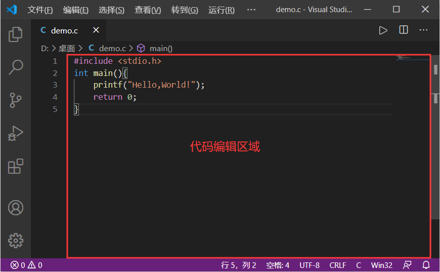
图 7 VS Code 编写 C 语言程序
点击右上角的
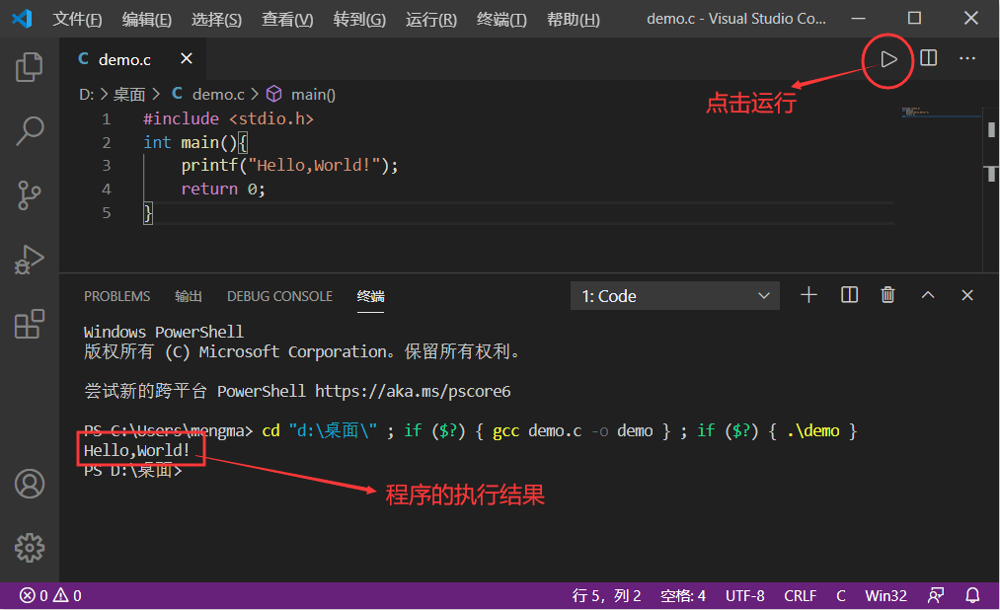
图 8 VS Code 执行程序并输出执行结果
值得一提的是，和 Sublime Text 一样，VS Code 也支持跨平台，包括 Windows、Mac OS X 以及 Linux。但和前者不同的是，无论读者在哪一平台上使用 VS Code，令其具备运行 C 和 C++ 程序能力的配置方法是一致的。
本节将以配置 Windows 平台上 VS Code 为例，为大家讲解如何在 VS Code 上直接运行 C 和 C++ 程序。
VS Code运行C和C++程序的配置过程
1) 和 Sublime Text 一样，VS Code 根本不具备 C、C++编译器。因此在配置 VS Code 之前，我们必须先在当前系统中，安装好可用的 C、C++ 编译器。对于 Windows 系统而言，读者可阅读《MinGW下载和安装教程》一节，安装 MinGW（GCC 编译器的移植版）；对于 Linux 和 Mac OS X 来说，很多系统上都默认安装有 GCC 编译器，如果没有，读者需要自己动手安装。注意，安装好的 GCC 编译器必须同时支持 gcc 和 g++ 指令。读者可在命令行窗口中分别运行 gcc -v 和 g++ -v 指令，判断当前系统中是否已配置好了所需的编译环境（如图 1 所示）。
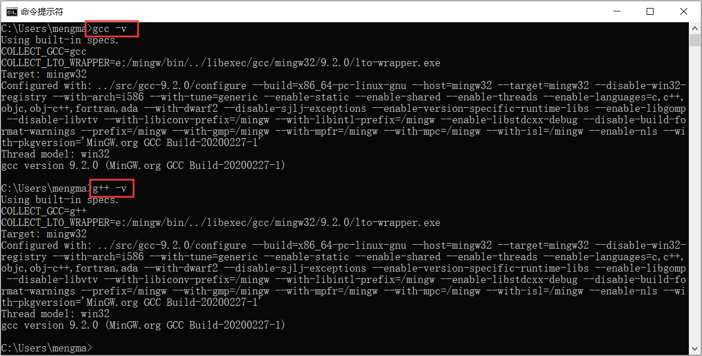
图 1 验证是否已配置好所需的编译环境
如图 1 所示，如果执行指令后，输出结果为相应编译器的有关信息，则表明编译器环境以配置成功；反之，如果提示我们“指令无效”，则表明编译环境尚未配置好。
在此基础上，对于英文基础薄弱的读者，可以通过为 VS Code 安装一个 Chinese 插件，使其变为中文版的 VS Code。安装过程如图 2 所示：
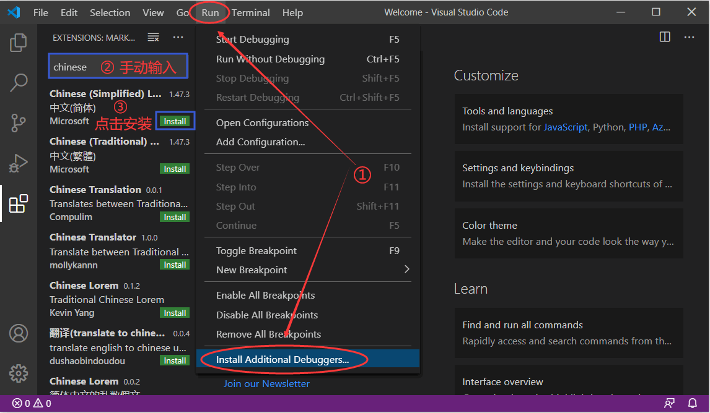
图 2 VS Code 中文化
如图所示，依次选择 "Run->Install Additional Debuggers..."，通过手动输入“chinese”（或“Chinese”），点击“Install”安装第一个，重启 VS Code 即可。
2) 事实上，使 VS Code 编辑器具备执行 C 和 C++ 代码能力的配置方法很简单，只需要为其安装 2 个扩展插件即可，分别为 C/C++扩展插件和 Code Runner 插件。打开 VS Code，其初始界面如图 2 所示：
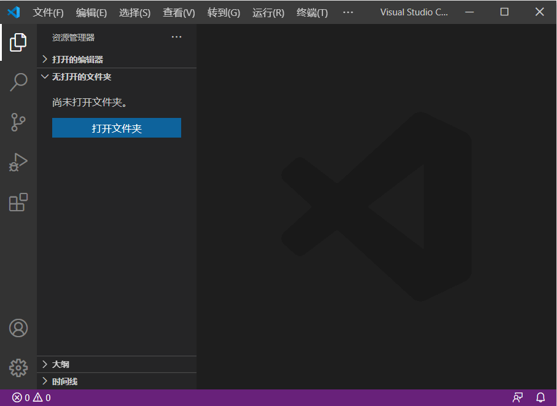
图 3 VS Code 的初始界面
3) 菜单栏中依次选择"运行 -> 安装附加调试器"，会弹出左侧对话框，选择“C/C++”扩展组件并点击“Install”进行安装。整个过程如图 4 所示：
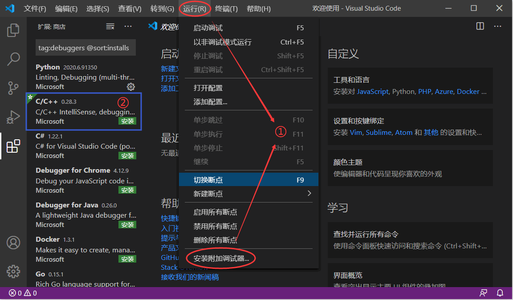
图 4 VS Code 安装“C/C++”插件
4) 同样，依次选择“运行 -> 安装附加调试器”，在左侧对话框中输入“Code Runner”后按
Enter回车键，然后选择 Code Runner 并点击 Install 下载。如图 5 所示：
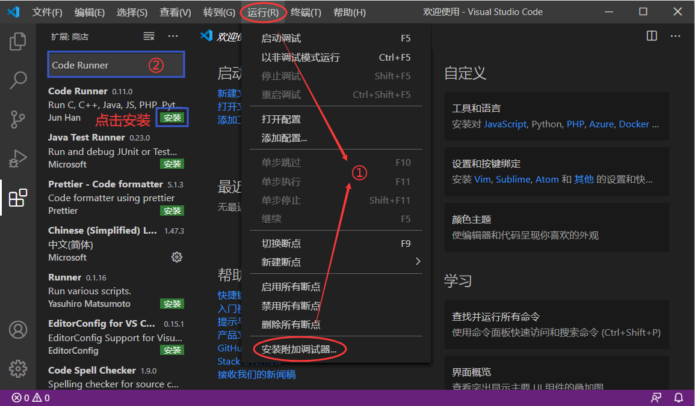
图 5 VS Code 安装 Code Runner 插件
注意，在已安装 Code Runner 插件的基础上，需要重启 VS Code 后，按图 6 所示，确定该插件是否安装有“Run In Terminal”扩展：
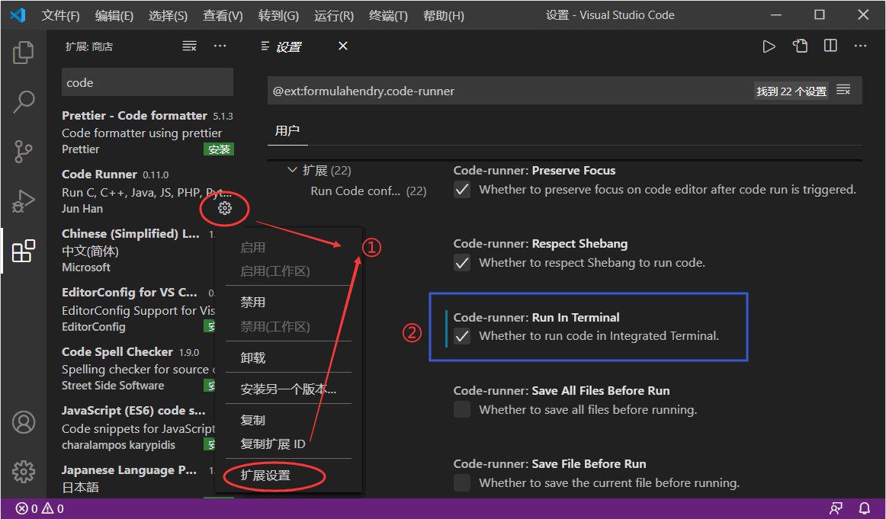
图 6 确定 Code Runner 插件是否安装有 Run In Terminal 扩展
由此，VS Code 就可以执行 C 或者 C++ 程序了。
依次在菜单栏中选择“文件 -> 新建文件”，这里以 C 语言程序为例，如下为在 VS Code 中编写的一段 C 语言程序，并将其保存为 demo.c：
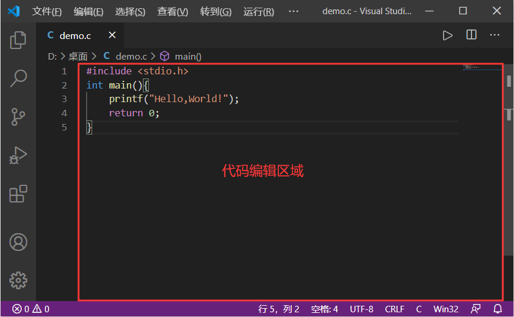
图 7 VS Code 编写 C 语言程序
点击右上角的
▷符号，即可执行 demo.c 中的程序，如图 8 所示：
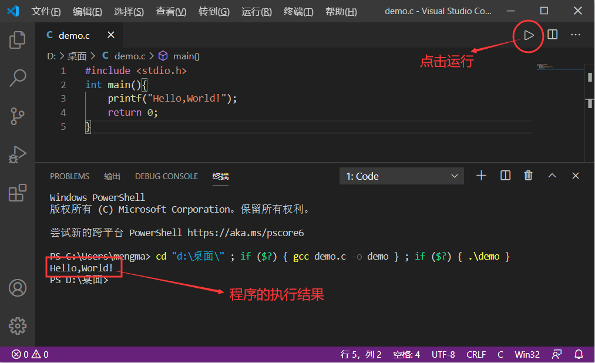
图 8 VS Code 执行程序并输出执行结果
事实上，VS Code 不仅拥有执行 C 语言程序的能力，如果为其继承相应的调试工具（例如 GDB），它还可以用来调试程序。关于如何使用 VS Code 调试程序，我们会在讲解 GDB 时做详细讲解，这里不再赘述。
关注公众号「站长严长生」，在手机上阅读所有教程，随时随地都能学习。内含一款搜索神器，免费下载全网书籍和视频。

微信扫码关注公众号